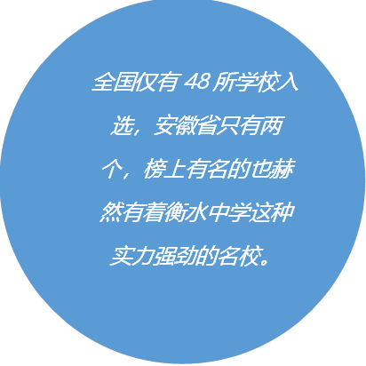

合肥八中心烛青年志愿者协会
八中的志愿者服务始终保持全面发展，小到学校中的活动，大到社会中的事情。
从闪客八中活动到交通志愿者，几乎随处都能见到八中志愿者同学们的身影。
Q:志愿者的主要工作是什么呢？
A：很多啦，比如说闪客的布置，学校大型活动的安排，以及许多校外的活动都有我们志愿者哦ovo
Q：听说参加志愿者活动会有学分对吗？
A: 对的！每次志愿者活动都是按照时间计算学分的，所以小伙伴们可以积极踊跃地参与来获取学分喔！
Q:志愿者会不会有很多事情很占用学习时间呢？
A:不存在的(●°u°●)
」我们的活动大多都是在课余时间的，在不占用同学们学习时间的同时也能让更多同学参与到帮助别人的行动中来
Q:哇我也想当志愿者为学校做贡献呢，但是之前志愿者选拔没有选上怎么办呢qwq
A:憋！担！心！许多大型活动除了志愿者协会的成员还会有许多其他的同学呢！我们热烈欢迎乐于助人的同学！
我们帮助合肥八中申请全国中学生志愿服务示范学校成功！
合肥八中，合肥八中，申请全国中学生志愿服务示范学校成功啦！
“全国中学生志愿服务示范学校”，这是什么？
通俗点来说，就是高中志愿者模范学校的一个奖状，一个认证。
噫嘘唏，这有什么了不起的。八中获得的奖状还少吗？
咳咳，敲黑板，此次志愿服务示范学校共有50所学校申请，48所学校通过。
划重点，不是全国只有50所学校申请了，是只有这50所学校符合申请标准。
难度有多大？咳咳，重点已经在图中画好了。
全国48所学校入选，安徽省只有两个，榜上有名的也赫然有着衡水中学这种实力强劲的名校。
八中的志愿者服务始终保持全面发展，小到学校中的活动，大到社会中的事情。从闪客八中活动到交通志愿者，几乎随处都能见到八中志愿者同学们的身影。
在过去的时间里，许多同学也默默奉献了他们乐于助人的一片赤子之心，为八中的建设贡献了一份力量。
为志愿者服务而骄傲，为八中骄傲。
为八中疯狂打call！！！
“有一种感动无处不在，有一种情怀轻舞飞扬。”